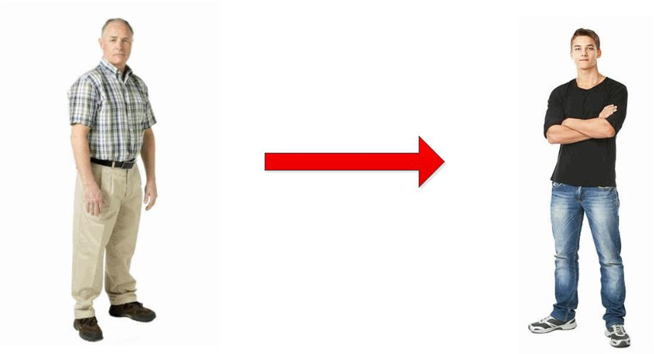
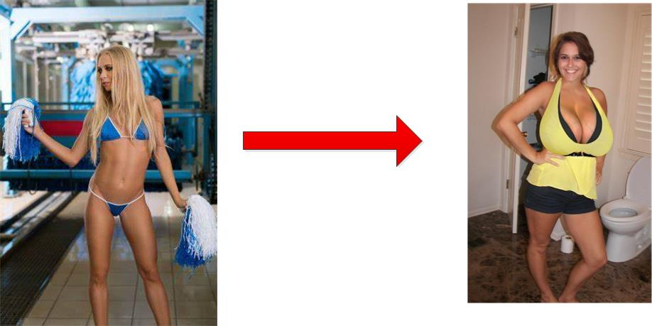
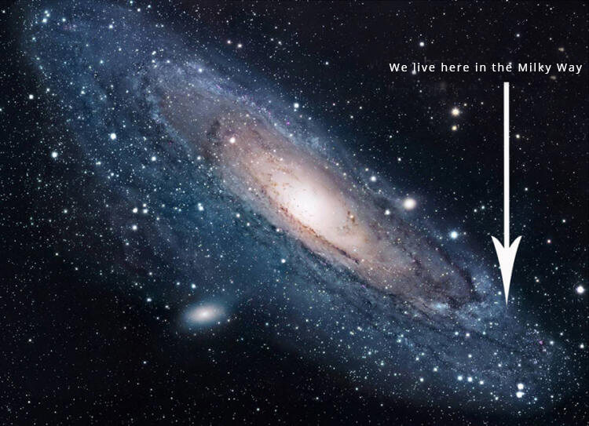
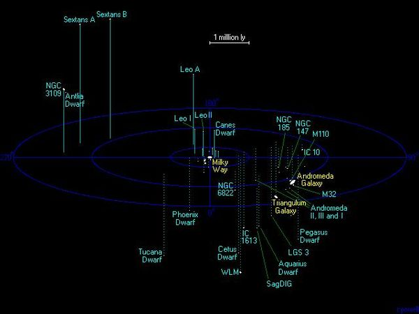

In this post, we will discuss the issues with assigning a gravitational frequency profile for both the destination coordinates and the egress coordinates. In addition, we will look at the indexing coordinated for the individual human traveler and what that can mean for other applications.
One of the most stunning realizations that you will encounter when dealing with world-line travel is the idea of fixed and set coordinates.
These coordinates are fixed to a given world-line within the MWI. They include a set time, and a geographic location, as well as the entire world-line that you are targeting. And by changing these coordinates just a small amount can have dramatic changes in location, time, and whatever world-line that the portal opens up to.
But it’s not only the coordinates of destination.
It’s also the coordinates associated with the human traveler that uses the dimensional portal.
So far, we have talked about using the dimensional portal as a gateway. We discussed using it as a gateway to other geographic locations. We also discussed it as a gateway to other times; a time-machine. And, of course, we discussed it as a gateway for other world-lines.
But we never talked about what would happen if you made slight alterations to the human traveler when they are in the portal.
Let’s look at all these issues.
Coordinates
When we refer to coordinates, what we are actually referring to is a complete gravitational frequency profile. This profile can take many forms and be massaged into all sorts of graphs and data sets for ease of understanding.
When I went through the MAJestic portal back in 1981, the coordinate set consisted of a thickly bound book of computer printouts. It was just reams and reams of numbers and symbols. But it need not be that way. Things have advanced technologically since that date.
In short, there are four groups of “coordinates” that we need concern ourselves with;
- The egress coordinates of the dimensional portal at the time of use.
- The destination coordinates of the destination. It may or may not be associated with a portal.
- The coordinates of the human traveler as they enter the portal.
- The coordinates of the human traveler as the leave the portal at the destination.
In all the previous posts / articles, we have discussed keeping the traveler coordinate identical from the egress portal to that of the destination coordinates. In this way, the traveler would experience no change at all when they enter the dimensional portal for teleportation purposes.
However, if you were to change the destination coordinates of the traveler, you can actually physically change the traveler itself.
Changes to the coordinates
By now, the reader should well understand that the dimensional portal erases all the coordinates from a traveler who enters it. It erases not only the coordinates of the traveler, but the coordinates of the portal itself.
By changing the coordinates of the destination, we can control…
- The geographic location of where the traveler ends up at.
- The time and date of where the traveler goes to.
- The world-line (variance) or deviance from the egress world-line.
By changing the coordinates of the traveler, we can control…
- His/her age.
- His/her body and organs.
- His/her intelligence.
- Even change him into “mush” like a teleportation mishap on the television series Star Trek.
Medical Uses
So if all you do is keep the destination coordinates equal to that of the egress coordinates, then you can limit the changes to the traveler alone.
If you were able to accurately map out how the coordinates for a human change over time, you can then selectively age or regress various organs or parts of the body to another time period.

In short, you might be able to turn a 90 year old man into a studly 21 year old full of “piss and vinegar”. Since memories are stored outside of the brain in the non-physical realities, his memories would stay intact while his body would be that of a much younger man.
You could do this with organs, and limbs as well.
With a solid understanding of the human biological makeup and how it pertains to the overall person, you might begin to alter the design of a given person.
You might be able to make them smarter, for instance, or give them bigger organs (a heart for instance, or a penis… perhaps). Heck, you might be able to change their gender or their physical appearance, and if you were really good, alter the physical structure of the person completely.

Of course, all this would require extensive experimentation. And, I am sure, that there would be some tradeoffs involved as well.
Interstellar Travel Technology
One of the great benefits of this technology is to allow a person to go anywhere in the universe. And since the universe is so gosh darn enormous, this is amazing. We, as humans, like to think that the Moon is far away, and the nearby star of Alpha Centauri as impossible…
But imagine traveling at will throughout our entire Milky Way galaxy. Imagine it. Not only would there be no limits, but you could do so in a fraction of a second and not worry about that Einstein time-compression issue.

But not only can this technology take you to nearby stars, but distant ones as well. It can also take you to other galaxies. And, of course, very distant galaxies as well. It is truly mind-boggling.

Who needs FTL technology, when all you need to do is step into a dimensional portal?
Of course, of course, you do need to know where you are going. Otherwise you would probably end up in the middle of deep space, or inside a hot star or somewhere else that would be very dangerous for your health.
Time Travel
With the configuration of the destination coordinates limited to the “dimension” coordinate of “time”, you can construct a real honest-to-goodness “time machine”.
It could take you a few years back where you might want to invest in some Microsoft or Google stock.
Or it could take you further back where you could experience the American Civil War close up and personal.
Or even further back than that. Perhaps the Middle Ages. Or maybe Ancient China. Or perhaps ancient Greece or Egypt.
You could use it to explore the future.
Like in the movie “Back to the Future” you could see what is in store (on a certain world-line) and then return and make the necessary adjustments. You can go forwards and backwards in time at will.
Creative Time Travel with Age Regression
If you were creative, you could age regress yourself to your age when you were 18 years old, and then use the portal to go back to that time and relive it all knowing what you know now.
It’s possible. It really is.
Of course, there would be no return for you, and you would be stuck back in that particular time period. And there would be two of “you”.
For me, that would trap me back in 1976…
The Jimmy Carter years. I was still in High School and living the "Dazed and Confused" lifestyle. I had many opportunities back then that I did not take. I am sure, knowing what I know now, that I should have taken them... What a ride it would have been!
Remember, while we talk about age regression and time travel, any trip would be one way unless you end up taking a portal back with you.
All fun and games aside. It was a different time and a different place, and I might feel really, really out of place. Don’t you think?
World Line Travel
As I have stated throughout my narrative, I home from a deviant world-line and this one that I happen to be involved in is a bit on the uncomfortable side.
We can alter our course through the world-lines over time and eventually get where we intend to go, but all world-lines move about in clusters and groups. This group is a pretty contentious one for certain.
Never the less, if you really want to explore alternative world-lines, this technology will permit that. It will land you and your consciousness at a new worldline from whence you can start traveling and changing the reality as you see fit through intention.
But it’s really difficult to grasp what kind of world-line that you would end up at.
The issue is really what changes and what deviance are you willing to accept? Can you accept a world-line where coke-cola was never invented? Can you handle a world-line where it is the law that pineapple be placed on pizza?
Are you willing to accept a world-line where there are no High Schools or universities, and instead people apprentice with a local craftsman? You do need to be careful, don’t you know.
I have discussed some of my experiences with world-line travel.
But, you all must keep in mind that my experiences were controlled and monitored by experts. And even at that, it was some pretty strange “shit” that I experienced. You will need to steel yourself for the really odd, and if you are not careful, you might end up in a far, far away world-line cluster and it might be near impossible to ever come back.
So you really do need to be careful.
Some things (well, heck… MANY) things that we consider taboo are normal on other world-lines. On this world-line as well, but most Americans are insulated from it all. From the “happy ending” at Chinese massage parlors (it’s fine, it’s not against the law) to the restaurant-chain-style bordellos in Germany. But the odd and the weird can really get mixed up in these areas when you conduct world-line travel.
Imagine landing in a new world-line and wanting to get a hamburger at a fast food joint, and when you say that you want to have the daily special, all the girls get on the counter and do this…
Anyways, the point that I am trying to make is that there are so many aspects of the coordinates and combinations of coordinates that describe a particular world-line that navigation to a particular one is very difficult. Because if you change one coordinate value it will influence other values as soon as you “land” at that destination coordinate.
So it is true.
You might actually end up in a world-line where pineapple on pizza is not only praised, it is considered the ONLY way to make a pizza. You know, guys, you must really be careful.

The only way to accurately map the MWI is though careful experimentation.
Conclusion
The DIY dimensional world-line portal is useless unless you are able to specify destination coordinates for either the destination or the traveler or both. This will require some experimentation and tests. But once you are able to do so, the universe of all-possibilities lies open to you.